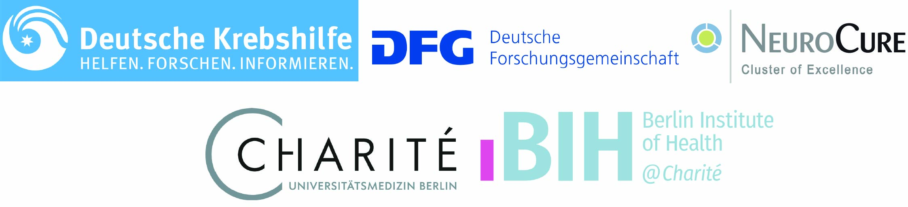

Welcome to the Liu Lab
We are a young enthusiastic team of interdisciplinary scientists and clinicians pursuing a deeper understanding of the processes that underlie brain tumor evolution, resistance, and how these are influenced by their age-dependent environment.
Our lab is located at Campus Mitte in the Department of Neurology at Charité - Universitätsmedizin Berlin, Germany.
Mission and values
The ultimate goal of our research is to find better therapies and improve the lives of patients suffering from brain cancer.
We believe that this can only be achieved through cross-disciplinary collaboration and team science.
We therefore hold ourselves responsible to each pursue scientific excellence with utmost integrity and rigor, collaborate openly within the team and with other groups, stay curious and willing to learn, and embrace a culture of mutual respect and generosity where every person regardless of their backgrounds and beliefs can thrive within the team and as an individual.
Please reach out if you are interested in joining us on this quest!
Funding
We are grateful to receive support from the Max-Eder program of the Deutsche Krebshilfe, as well as from:
